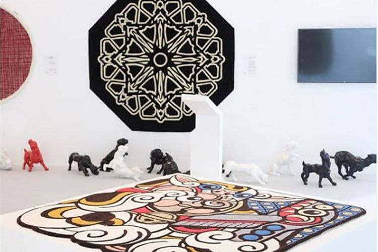

Festival ini telah menggalang kolaborasi dengan berbagai pihak, baik pemerintah, warga, seniman, maupun ekosistem pekerja kreatif, dalam menghidupkan dinamika budaya kota dan mengembangkan ekonomi kota. Tema yang dipilih untuk setiap edisinya merupakan upaya untuk memperluas wacana budaya dan seni visual, terutama yang menginspirasi dan memantik perbincangan untuk merespons perubahan yang terus terjadi di segala aspek kehidupan
Selama lebih dari 10 tahun, Indonesian Contemporary Art & Design (ICAD) telah memamerkan lebih dari 500 karya seni dan desain dari para seniman, desainer, dan kreatif, menyelenggarakan lebih dari 100 program dengan mitra kolaborasi, serta membuka pintunya bagi jutaan penikmat seni dan desain.
Art Jakarta adalah pameran seni unggulan di Indonesia, dengan fokus jelas pada Asia Tenggara. Diselenggarakan di pusat seni kontemporer yang dinamis di kawasan ini, ini adalah forum internasional yang dinamis untuk semua pemangku kepentingan ekosistem seni yang penting ini. Tahun ini Art Jakarta 2023 akan diselenggarakan pada 17-19 November di JIExpo Kemayoran Jakarta.

Seni lukis adalah salah satu cabang dari seni rupa yang berfokus pada kegiatan melukis. Dengan dasar pengertian yang sama, seni lukis adalah sebuah pengembangan yang lebih utuh dari menggambar. Melukis adalah kegiatan mengolah medium dua dimensi atau permukaan dari objek tiga dimensi untuk mendapat kesan tertentu.
Seni patung atau seni pahat adalah cabang seni rupa yang hasil karyanya berwujud tiga dimensi. Biasanya diciptakan dengan cara memahat, modeling atau kasting.
seni arsitektur diartikan sebagai kegiatan merancang dan membangun untuk keseluruhan lingkungan binaan level makro, contoh; perencanaan kota atau taman kota.
Seni ukir adalah seni membentuk gambar pada kayu, tempurung, bambu, batu, logam, dan bahan lainnya. Hasilnya berupa gambar atau hiasan yang indah, dengan bagian-bagian yang cekung dan cembung atau berlubang (tembus).